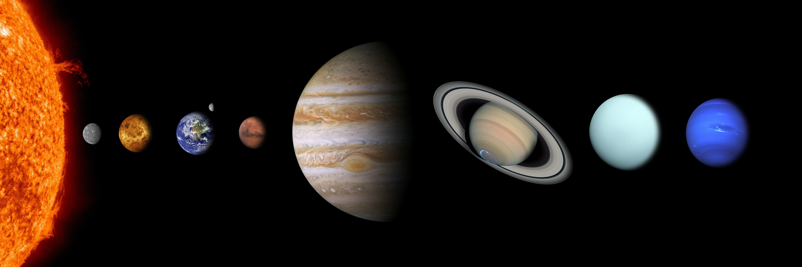

Developing Discipline Related Teaching Strategies

The focus of this competency was to learn teaching strategies specific to your discipline. To learn how to develope these teaching strategies I took the Center for the Integration of Research, Teaching and Learning (CIRTL) Massive Open Online Courses (MOOCs) course “Introduction to Evidence Based Undergraduate STEM Teaching”. This course is meant to be an introduction to best teaching practices in STEM. Teaching physics and astronomy to students will come with its own unique challenges. Students in an astronomy or physics course may not believe the material is relevant to them or they may feel overwhelmed in a science class that requires math. Many students have a fixed mindset about math and science and through this course I learned strategies to challenge that thinking and help students grow in STEM. I learned teaching strategies to clearly define the learning goals of the class. I can make lesson goals coherent, clearly communicated and attainable using backwards design. Clearly defined goals help students know what to expect from the class and what they need to be able to do to be successful. It takes away ambiguity which can lead to stress and frustration. Through peer assessment and group active learning I can create an environment conducive to teamwork so students can tackle challenging concepts together. Students will learn from each other and may feel more willing to participate in activities with peers knowing that mistakes are part of the learning process. Concept maps and class reflection, as well as using a problem based approach will help students tie the concepts and skills learned in class to their own lives. Making the material and skills learned relevant and useful to students will increase motivation and engagement.
Artifacts and Rationale
Through the CIRTL MOOCs course "Evidence Based Teaching in STEM" I have created a lesson plan for an introductory astronomy course, with the lesson topic being phases of the moon. In Module 5 we discussed cooperative and problem based learning and how to apply these strategies in class. Class time is structured so that there is plenty of class discussion and problem solving in pairs or groups. Through the problem based approach students will learn how to use concepts in real world problems. Giving students time to think through problems and then share their thoughts with a partner will encourage individual problem solving and learning from others. This lesson plan includes course level and topic level goals made using backwards design that describes what students should be able to do after the lesson. The lesson uses student's prior knowledge and experiences to inform our understanding. A hands on group activity is then used for students to gain a better understanding of why we see the phases of the moon.
This worksheet walked me through the steps for designing an active learning lesson. It started with the larger picture, the class context, topic and student population. Then I selected two active learning strategies to use in my lesson, for this worksheet I chose cooperative learning and peer instruction. After describing the lesson structure I was asked to review each of the learning principles from Module 1 and assess how my activity fullfills each principle.
Reflection
Different disciplines will have different content, purpose and audiences. Teaching physics and astronomy gives me the opportunity to teach students how to think like scientists, how to approach solving problems and how to develop scientific skills. Teaching science through lecturing and memorizing concepts will not be useful or interesting to students who are not STEM majors and will not teach students how to apply their knowledge to any real world problems. Instead, developing discipline related teaching strategies will illuminate how the world works through the lens of physics or astronomy. Using real world problems will allow students to apply their understanding to tangible relevant issues and cultivate critical thinking and problem solving skills that they can use in other courses and their own lives.
Using a problem based approach will make the concepts relevant to students. It will also allow students to play a role in their own learning giving them a sense of agency and resposibility. STEM courses (at any level) are an opportunity to teach students to think like scientists. They will do things like, conduct experiments, visualize and interpret sets of data, understand sources of error and use writing to organize their thinking. Cooperative learning allows students to construct an understanding together and it also improves interpersonal skills like communication and teamwork. When working with peers, students are less afraid of making mistakes and more willing to participate in activities. Science is collaborative and students will be encouraged to work together on homework problems and on in class problems. Being able to learn from each other will foster a sense of belonging and responsability. During lecture, we will frequently use I-clicker questions so that students can participate without fear of answering incorrectly. Test corrections will allow students to make back lost points, emphasizing that the goal of the class is learning not grades.